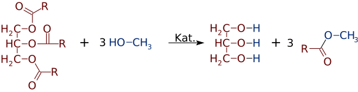

Biodiesel
Biodiesel, promoted as an alternative to petroleum-based fuels used in diesel engines, is made from plant and animal oils. Chemically, biodiesel is a mixture of esters of long-chain fatty acids prepared from plant and animal fats and oils by trans-esterification. This is a reaction between an ester (The major components of plantbased oils and animal fats are triacylglycerols) and an alcohol in which the −OR′′ on the alcohol exchanges with the OR′ group of the ester (where R′ and R′′ are organic groups):
Thus Biodiesel fuel consists of the monoalkyl esters of plant oils or animal fats, which means that it is renewable because the CO2 produced by its combustion comes from recently grown plants, and growing oilseed plants will uptake this CO2 for photosysntethis and the production of more oil seeds.
The reaction of fats and oils with methanol (in the presence of a catalyst to speed up the reaction) produces a mixture of the methyl esters of the fatty acids and glycerol. Glycerol, a by-product of the reaction, is a valuable commodity for the health care industry, so it is separated and sold. The mixture of esters that remains can be used directly as a fuel in existing diesel engines, or it can be blended with petroleum products. In the latter case, the fuel mixture is identified by a designation such as B20 (B = biodiesel, 20 refers to 20% by volume). Biodiesel has the advantage of being clean burning with fewer environmental problems associated with exhaust gases. In particular, there are no SO2 emissions, one of the common problems associated with petroleum-based diesel fuels.